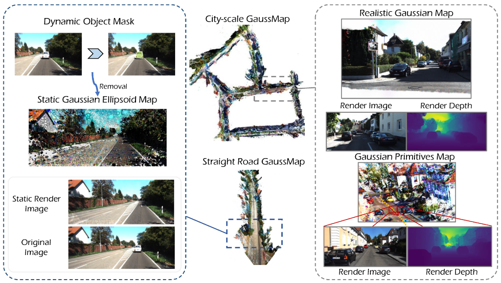

Graduate Research Assistant at the Beijing
Institute of Technology.
I research bio-robotics, autonomous navigation, sensor fusion, and neuromorphic methods. My work
focuses on developing robust navigation frameworks for GPS-denied environments through sensor
fusion, neuromorphic approaches, and advanced multi-agent simulations.
To explore our thematic research pillars and open-source testbeds, please visit our Research Atlas and Flagship Projects.
Email: chandan [at] bit [dot] edu [dot] cn
Location: Beijing, China


News / Experience
- Nov 2025 Nature-inspired navigation systems for robots published in Nature Reviews Bioengineering. Synthesizes biological insect foraging and neural circuits into low-power autonomous robotic SLAM.
- 2026 Appointed as Special Edition Guest Editor for Frontiers in Robotics and AI.
- Dec 2024 Architecting a smart wheelchair mobility platform with cloud-connected telemetry for real-time monitoring and adaptive assistance.
- Sep 2024 Started Graduate Research Assistantship at BIT, investigating bio-inspired swarm robotics and GPS-denied navigation.
Publications
C. Sheikder*, W. Zhang, X. Chen, F. Li, X. He, Z. Zuo, X. Tan, Y. Liu
Nature Reviews Bioengineering (2025)
Paper •
PDF •
Subpage
Details •
DOI
C. Sheikder*, et al.
Sensors (MDPI, 2025)
Paper (Open
Access) •
DOI
C. Sheikder*, et al.
Journal of Field Robotics (Wiley, 2025)
Paper •
PDF •
DOI
C. Sheikder*, et al.
AIAA Journal of Aerospace Information Systems (2026)
Paper •
PDF •
DOI

H. He, C. Sheikder*, Z. Yin, P. Liu, M. Guo, W. Zhang
Applied Sciences (MDPI, 2026)
Paper
C. Sheikder*, et al.
Renewable and Sustainable Energy Reviews (Elsevier, 2026)
Paper (ScienceDirect) /
Author Manuscript PDF
C. Sheikder*, et al.
Cell Reports Physical Science (Accepted / In Revision, 2026)
Author Manuscript PDF
C. Sheikder*, et al.
IEEE IATMSI (2022) — Best Paper
Award
Subpage Details